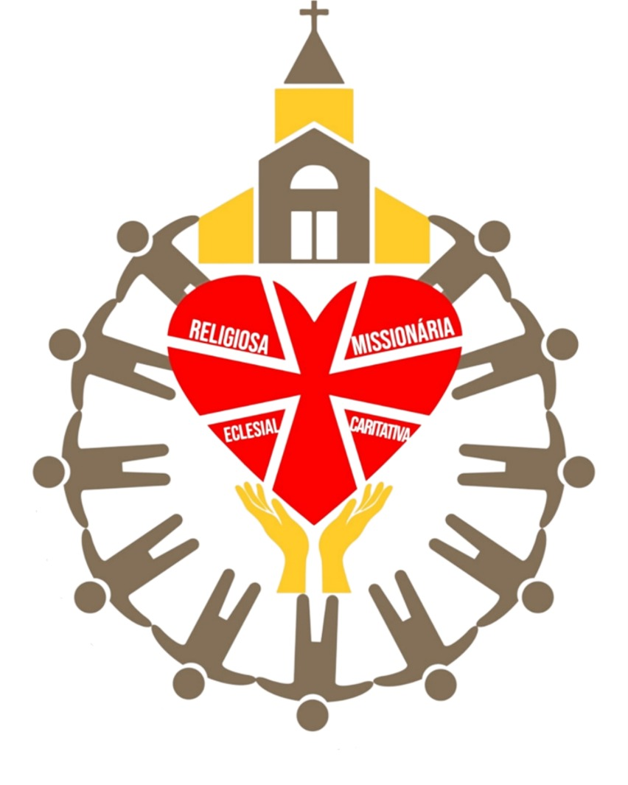
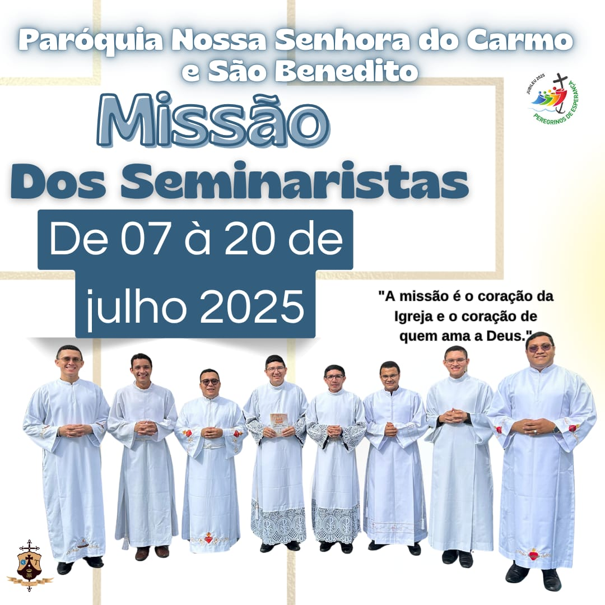

Conheça a Paróquia
Paroquia do Carmo e São Benedito
DISTRITO
SÃO BENEDITO
IGREJA MATRIZ - CARAPAJÓ
CC. Nª SRª DE NAZARÉ - AJARAÍ COSTA
CC. MENINO JESUS - AJARAÍ
CC. SANTA ANA - CAPITEUA
CC. SÃO VICENTE DE PAULO - COLÔNIA
CC. SANTA MARIA - GAMA
CC. MENINO JESUS - GUAJARÁ DE BAIXO
CC. SÃO SEBASTIÃO
CC. SÃO RAIMUNDO NONATO - JURUATEUA
CC. SANTA MARIA - MAPEUÁ I
CC. SANTO ANTÔNIO - MAPEUÁ II
CC. SANTA RITA DE CÁSSIA - TABATINGA I
CC. SANTA MARIA - TABATINGA II
CC SÃO BENEDITO - VILA NOVA
CC. SANTO ANTÔNIO - TREVO

Diác. Loudival Baia Quaresma
DISTRITO
SÃO TOMÉ
CC. SÃO TOMÉ - PORTO GRANDE
CC. Nª SRª APARECIDA - AJARAPANEMA
CC. SÃO JOÃO BATISTA - AJARÁ
CC. Nª SRª DA CONCEIÇÃO - BITUBA
CC. SAGRADA FÁMILIA - JUTAITEUA
CC. SAG. CORAÇÃO DE JESUS - GUAJARÁ DE CIMA
CC. VIRGEM MARIA - PATAUATEUA

Diác. Messias de Nazaré R. Estumano
E-mail: messias.estumano@outlook.com
DISTRITO
SANTÍSSIMA TRINDADE
CC. SS. TRINDADE - BOM JARDIM
CC. MENINO JESUS - BOSQUE
CC. Nª SRª DO LIVRAMENTO - MAÚ
CC. Nª SRª NAZARÉ - POEIRÃO
CC. Nª SRª DE FÁTIMA TAUAJÓ
CC. DIV. ESP. SANTO - CURUPERÉ
CC. SÃO SEBASTIÃO - CAÇÃO
CC. MENINO JESUS - PACACANGA
CC. SAGRADA FAMILIA - JURUATÉ
CC SÃO BENEDITO - ITANDUBA DE BAIXO
GRUPO SÃO BENEDITO - ITANDUBA DE CIMA
CC. SÃO FRANCISCO - COLOMY
G.SÃO JOSÉ - MURUTIZAL
CC. SANTA MARIA - CARACARÁ

Diac. Joel de Nazaré Prazeres Nabiça
E-mail: joeldenazare10@gmail.com

Diác. Raimundo Nonato Pinheiro Gonçalves
E-mail: nopj71@gmail.com
Pároco
Pe. Pedro Henrique de Barros


Campanha
1. Dízimo
Venha ser um dizimista tambem!
Paróquia Nossa Senhora do Carmo e São Benedito
🌱Campanha do Dízimo –
Semeando Fé, Colhendo Esperança
Nesta nova campanha, nossa paróquia convida você a viver o dízimo como um verdadeiro ato de fé, amor e
compromisso com a missão da Igreja.

A proposta é simples, mas profunda: cada contribuição é uma semente. E toda semente regada com oração,
generosidade e fé, dá frutos de esperança, solidariedade e evangelização.
✨ Faça a experiência!
🔹 Se você ainda não é dizimista, dê o primeiro passo!
🔹 Se já é, renove sua fé e seu compromisso!
Juntos, vamos semear o bem e colher esperança.
Participe da campanha. Seja bênção na vida da nossa comunidade.
Campanha: Doe, Construa, Participe!
"O salão é da comunidade. A obra é de todos nós"
É o nosso convite a todos que amam esta paróquia:
✔️ DOE com generosidade
✔️ CONSTRUA com esperança
✔️ PARTICIPE com fé e alegria
Toda ajuda conta. Toda contribuição, por menor que seja, se transforma em bênção.
💙 Como você pode ajudar:
🔹 Doação financeira – via Pix, envelope ou na secretaria paroquial
🔹 Materiais de construção – cimento, areia, tijolos, ferro, entre outros
🔹 Ações solidárias – participe ou organize rifas, bingos, almoços beneficentes
🔹 Orando e divulgando – reze pela campanha e ajude a espalhar essa causa
📢 Faça parte dessa construção!
O salão será nosso ponto de encontro, fé e missão. Um espaço de todos e para todos.
Juntos, vamos transformar esse sonho em realidade!
📲 Para mais informações fone (91) 984578625
entre em contato com a secretaria paroquial.
2. Salão Comunitário
Ajude na reforma do salão
Paróquia Nossa Senhora do Carmo e São Benedito
Campanha: Doe, Construa, Participe!
"O salão é da comunidade. A obra é de todos nós"
É o nosso convite a todos que amam esta paróquia:
✔️ DOE com generosidade
✔️ CONSTRUA com esperança
✔️ PARTICIPE com fé e alegria
Toda ajuda conta. Toda contribuição, por menor que seja, se transforma em bênção.
💙 Como você pode ajudar:
🔹 Doação financeira – via Pix, envelope ou na secretaria paroquial
🔹 Materiais de construção – cimento, areia, tijolos, ferro, entre outros
🔹 Ações solidárias – participe ou organize rifas, bingos, almoços beneficentes
🔹 Orando e divulgando – reze pela campanha e ajude a espalhar essa causa
📢 Faça parte dessa construção!
O salão será nosso ponto de encontro, fé e missão. Um espaço de todos e para todos.
Juntos, vamos transformar esse sonho em realidade!
📲 Para mais informações fone (91) 984578625
entre em contato com a secretaria paroquial.
Notícia
📜 Missão dos Seminaristas
Julho 2025

"Ide por todo o mundo e pregai o Evangelho a toda criatura." (Marcos 16,15)
De 7 a 19 de julho, os seminaristas estarão em missão em nossas comunidades. Uma vivência de fé, serviço
e
partilha com o povo de Deus.
📅 Cronograma de Missão
➤ 07 a 11/07 – Comunidade Ajarapanema
🚐 Envio: 07/07 às 15h - Saída de Carapajó para Ajarapanema
➤ 11 a 15/07 – Comunidade Bituba
🚐 Deslocamento: 11/07 após o almoço
➤ 16 a 19/07 – Comunidade Ajará
🚐 Deslocamento: 16/07 após o café da manhã
➤ 19/07 – Ida para Vila Carapajó
🚐 Após o almoço
✝️ 19 a 20/07 – Missão na Igreja Matriz (Vila Carapajó)
As comunidades ficarão responsáveis por buscar os seminaristas para continuidade da missão em cada
local.
"A missão é o coração da Igreja e o coração de quem ama a Deus."
Seja você também instrumento de evangelização!
Pe. Pedro Henrique de Barros
Gratidão pelos 6 anos de missão
Padre Pedro Henrique de Barros
Junho 2025
A Paróquia Nossa Senhora do Carmo e São Benedito – Vila Carapajó

Se enche de gratidão por sua caminhada conosco.
Seis anos que não foram fáceis, mas cheios de entrega, coragem e fé.
O senhor chegou em meio a desafios, acolheu nossas dores e esperanças, e com coração de pastor,
foi nos
ensinando a sermos uma Igreja viva e comprometida.
Nem todos os dias foram leves. Teve silêncio, teve dúvida. Mas o seu “sim” permaneceu
firme.
Obrigado por acreditar quando parecia difícil. Por ficar quando seria mais fácil partir.
Por cuidar de cada detalhe e conduzir com amor o povo que Deus lhe confiou.
Que o Senhor te fortaleça sempre.
Com o coração cheio de gratidão,
Paróquia Nossa Senhora do Carmo e São Benedito
Festividade da Padroeira
É chegada a hora, povo de fé!
A tão esperada Festividade de Nossa Senhora do Carmo vai começar!
📍 Paróquia Nossa Senhora do Carmo e São Benedito – Vila Carapajó
📅 De 10 a 20 de julho
Serão dias de muita alegria, oração, louvor e graças derramadas sob o olhar amoroso da Mãe do Carmelo!
Vem viver conosco esse tempo de bênçãos e renovar tua fé aos pés de Maria!
Nossa Senhora do Carmo, rogai por nós! 🌹
#FestividadeNSCarmo #ParóquiaCarapajó #FéEmFesta
#MariaNosConduz #DevoçãoQueNosUne
#VivaNossaSenhora
ACOMPANHE AS ATUALIZAÇÕES DA FESTIVIDADE!